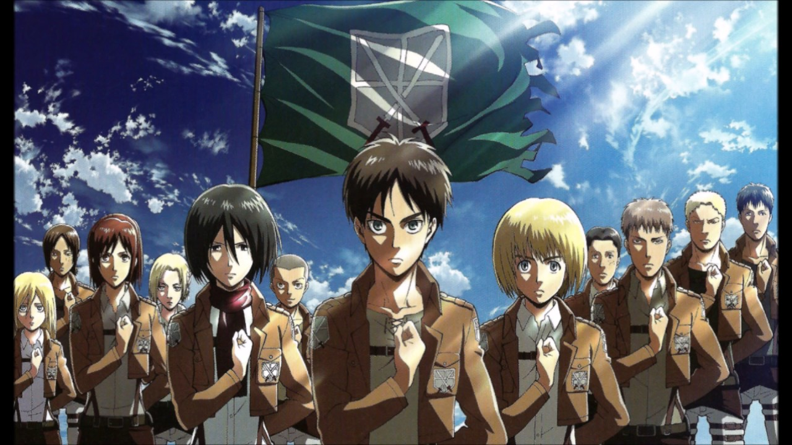

Shingeki no Kyojin (進撃の巨人), en habla hispana como Ataque a los Titanes y Ataque de los Titanes, es una serie de manga escrita e ilustrada por Hajime Isayama. La historia gira en torno a Eren Jaeger y sus amigos de la infancia, Armin Arlert y Mikasa Ackerman. En este mundo, la población humana vive concentrada dentro de tres enormes muros (María, Rose y Sina) para protegerse de la aparición de seres gigantescos que devoran personas: Los Titanes
Hajime Isayama
Shōnen Magazine Comics
Kōdansha
Acción, post-apocalíptico, drama, ciencia ficción, suspenso, misterio, tragedia
25
9 de septiembre de 2009
Masashi Koizuka
Yasuko Kobayashi
Wit Studio
Hace más de 100 años, la humanidad es casi aniquilada por unas siniestras criaturas desde unos 3 hasta 15 metros de altura, conocidas como los Titanes, que surgen de la nada con un único propósito: devorar seres humanos Después de un siglo en que la humanidad vive una pacífica vida, dentro de un enorme área de terreno amurallada, protegida por muros de 50 metros de altura, el triple de los titanes más altos registrados hasta la fecha de su construcción, en el distrito sur,conocido como Shingashima, el Titán Colosal, de mayor altura que las mismas murallas, rompe la Puerta del Distrito, creando una grieta y permitiendo la entrada a un gran grupo de titanes de menor tamaño. En el Distrito de Shingashima viven Eren Jaeger, Mikasa Ackerman y Armin Arlert, amigos inseparables de infancia. Eren Jaeger, tras ser salvado y haber sobrevivido al ataque, jura eliminar a todos los titanes en venganza por la muerte de su madre. Para lograr este objetivo, Eren se une a la legión de reconocimiento que es la rama del ejército encargada de viajar al exterior con sus amigos para combatir a los titanes y reclamar el territorio que una vez perteneció a la humanidad.
| personaje | edad |
|---|---|
| Eren Jaeger | 15 |
| Mikasa Ackerman | 15 |
| Armin Arlert | 15 |
| Levi Ackerman | 22 |